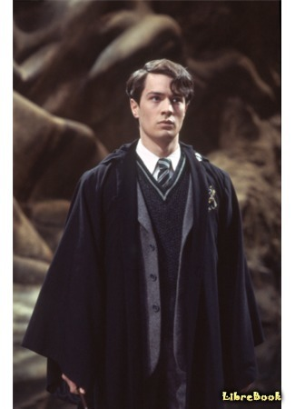
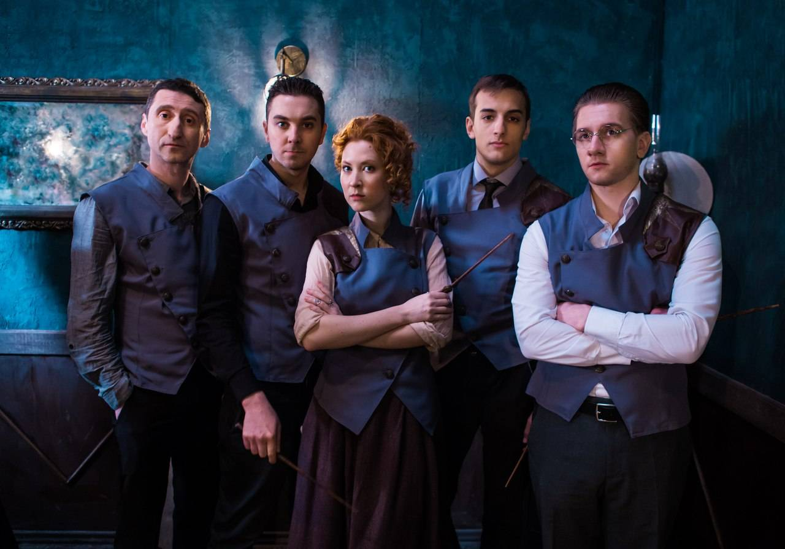

Сайт о Гарри Поттере
Гарри Поттер и Проклятое дитя
«Гарри Поттер и Проклятое дитя» (англ. Harry Potter and the Cursed Child) — пьеса, состоящая из двух частей (4 акта), премьера которой состоялась 30 июля 2016 года в Лондоне в театре Palace. Её авторами стали писатель и сценарист Джек Торн, режиссёр Джон Тиффани и создательница поттерианы Джоан Роулинг. Восьмая часть цикла о Гарри Поттере. Премьера книги с текстом пьесы состоялась 31 июля 2016 года (в России — 7 ноября 2016 года)
Сюжет Проклятого дитя
Действие начинается сразу после эпилога книги «Гарри Поттер и Дары Смерти».

Гарри Поттер и его жена Джинни Уизли встречаются с Роном и Гермионой на вокзале Кингс-Кросс при отправке своих детей в Хогвартс. В поезде младший сын Гарри Поттера — Альбус Северус Поттер, неуверенный в себе и рефлексирующий мальчик, случайно знакомится с сыном Драко Малфоя — Скорпиусом Малфоем. По прибытии в Хогвартс Альбус Северус получает распределение не в Гриффиндор к своему старшему брату Джеймсу, а в Слизерин, куда уже распределился Скорпиус. Выбор шляпы становится шоком для окружающих, но благодаря этому зародившаяся в поезде дружба начинает крепнуть.

…Проходит три года, в течение которых Альбус страдает от неуспеваемости, нежелательного внимания со стороны других студентов и собственных сравнений себя со своим знаменитым отцом (как ему кажется — не в свою пользу). И в личном общении между Альбусом и Гарри множатся непонимания. Гарри решает сделать подарки сыновьям накануне их поездки в Хогвартс. Альбус глубоко оскорблён тем, что, старшему брату достаётся мантия-невидимка, а ему — «всего лишь» детское одеяльце Гарри (хотя Гарри считает наоборот: для него единственная вещь, доставшаяся от его родителей — самый ценный дар). В гневе Альбус обливает одеяльце приворотным зельем-подарком Рона... Скорпиус, добродушный и ироничный, но такой же неуверенный в себе паренёк, терзается от издевательств на почве слухов, что он якобы сын Волан-де-Морта. Ему нравится Роза Уизли, дочь Рона и Гермионы, отважная староста и игрок в квиддич, но та лишь высокомерно презирает «отпрыска Малфоя», а заодно и Альбуса, который с ним водится. Мама Скорпиуса умирает, Альбус поддерживает друга. Тем временем Гарри и Гермиона, теперь сотрудники Министерства магии, усердно пытаются скрыть существование последнего оставшегося Маховика времени, чтобы сохранить его для дальнейших исследований.

Начало приключений
В доме у Гарри появляется престарелый Амос Диггори, который пытается убедить Гарри использовать устройство, чтобы вернуться в прошлое и спасти погибшего от рук Волдеморта Седрика Диггори. Гарри отказывается, поскольку это изменит настоящее. Альбус подслушивает разговор и разочаровывается в отце, чуть позже заявив ему, что хотел бы не быть его сыном. Он знакомится с племянницей Амоса, Дельфи, и убеждает Скорпиуса объединиться с ней, чтобы найти Маховик, спасти Седрика и тем самым доказать отцу, что тот не прав. Для этого Альбус и Скорпиус сбегают из Хогвартс-экспресса, находят Дельфи и уже втроём с помощью оборотного зелья проникают в Министерство магии. Правда, выясняется, что с трудом добытый Маховик сломан, и в прошлое можно попасть только на 5 минут, а потом происходит автоматическое возвращение обратно. Друзья отправляются в прошлое на Турнир Трёх Волшебников, чтобы помешать Седрику выиграть, так как считают, что это поражение в Турнире спасёт его от столкновения с Волан-де-Мортом. В 1995-м году они переодеваются в студентов Дурмстранга и обезоруживают Седрика во время состязания с драконом. Но юноша всё равно погибает: неудача на первом состязании только усиливает волю к победе…
Первая неудача
Однако действия Альбуса и Скорпиуса приводят к изменению настоящего: проделки «студентов Дурмстранга» замечает юная Гермиона, подозревающая, что их подговорил Виктор Крам. В результате на Рождественский бал она идёт не с Крамом, а с Роном Уизли. Во время бала она страдает от неловкости Рона так, как в «правильной версии настоящего» страдала Падма Патил… В итоге именно Падма поддерживает Рона после неудачи с Гермионой — и у них завязываются романтические отношения… Вернувшись в настоящее время, друзья обнаруживают, что Рон теперь женат на Падме, Гермиона стала довольно неприятным и сварливым преподавателем в Хогвартсе, а их дочери Розы не существует вообще. Мальчики решают использовать Маховик ещё раз, чтобы спасти Диггори. Альбус и Скорпиус отправляются в 1995 год на второе состязание, где унижают Седрика, применив к нему заклятие раздувания.
Вторая неудача
Это снова приходит к нарушению в настоящем: смелый Седрик проигрывает турнир и из-за унижения решает стать Пожирателем смерти. В ходе битвы за Хогвартс он убивает Невилла Долгопупса, который должен был уничтожить Нагайну, последний крестраж Волан-де-Морта. Нагайна остаётся в живых, Волан-де-Морт и его сторонники побеждают в битве и убивают Гарри Поттера. Скорпиус, вернувшись в современный Хогвартс, обнаруживает, что раз Гарри Поттер был убит — то Альбус не существует, а Хогвартсом управляют Пожиратели Смерти во главе с Долорес Армбридж. Её правая рука — Северус Снегг. Скорпиус, зная о том, что Снегг был двойным агентом и работал на Дамблдора, обращается к нему, объясняя существование другого настоящего, где Гарри Поттер выжил, Волдеморт повержен, а его, Скорпиуса, лучший друг — Альбус Северус Поттер — назван в том числе и в честь преподавателя Зельеварения… В итоге Снегг помогает юному Малфою, сводя его с членами подпольного Сопротивления — Роном и Гермионой, которых прячет в Хогвартсе много лет. На прощание Снегг просит передать Гарри свою признательность, что тот назвал сына его именем. Вернувшись в прошлое уже в третий раз, Скорпиус обезвреживает находящихся там себя и Альбуса из прошлого, которые пытаются помешать Седрику… Друзья воссоединяются в настоящем, которое вернулось к первоначальному состоянию. Они извиняются перед отцами (которые за время отсутствия сыновей наконец примирились) и решают уничтожить незаконный Маховик времени. К ним присоединяется Дельфи, которая внезапно обезоруживает мальчиков… Оказывается, она и есть ребёнок Волдеморта, Проклятое дитя… Она подчинила себе Амоса Диггори, чтобы под предлогом спасения Седрика добраться до Маховика и спасти Волдеморта. Она переносит всех в прошлое, уничтожает Маховик и улетает в неизвестном направлении… Мальчики выясняют, что находятся в октябре 1981 года и понимают, что Дельфи хочет спасти Тёмного Лорда, предупредив его о том, что произойдет, когда он попытается убить маленького Гарри Поттера…
План спасениия
Альбус и Скорпиус добираются до Годриковой Впадины, пробираются в дом Поттеров и отправляют в будущее послание из прошлого, написав секретное письмо на детском одеяльце — единственной вещи, которая попадёт к Гарри из родительского дома. В настоящем Гарри, Джинни, Рон, Гермиона и Драко Малфой обнаруживают исчезновение Альбуса и Скорпиуса. Объединившись, они идут по следу и так же выясняют, что Дельфи отнюдь не племянница Амоса Диггори (у него с супругой нет братьев и сестёр), а дочь Волан-де-Морта и Беллатрисы Лестрейндж. Но благодаря верно рассчитанной Альбусом цепочки обстоятельств, Гарри обнаруживает письмо на одеяле и узнает, что дети застряли в 1981 году в Годриковой впадине. Драко признается, что в семье Малфоев сохранился ещё один Маховик времени, уже исправный. Гарри, Драко, Рон, Гермиона и Джинни прибывают в 1981 год, заманивают Дельфи в ловушку и обезвреживают её. Она признаётся, что только лишь хочет знать своего отца, однако Поттер, хотя и удивлён столь невинным мотивом, всё же отвечает, что это невозможно: они не в силах изменить прошедшее. Герои должны остаться в прошлом и убедиться в том, что события 31 октября 1981 года остаются неизменными — Гарри становится свидетелем того, как Волдеморт входит в дом его родителей, чтобы убить его… Затем все возвращаются в настоящее, Дельфи отправляют в Азкабан… Гарри и Альбус приходят к могиле Седрика Диггори, которую Гарри и так регулярно посещает. Пережитое объединяет их и даёт возможность примириться…
Фанатские фильмы про Гарри Поттера

Сестры дома Блэк

Сестры дома Блэк (англ. Sisters of House Black) - неофициальный фанатский фильм-приквел, основанный на вселенной Гарри Поттера, во время первой попытки Волан-де-Морта прийти к власти. Беллатриса Лестрейндж, Андромеда Тонкс и Нарцисса Малфой - три сестры из самого благородного и древнего рода Блэков. Волшебная война на пороге, и теперь выбор одной сестры решит судьбы остальных.
Сириус Блэк и Хранитель тайны

Белла с компанией Пожирателей пытает магов, пытаясь узнать, где прячутся Поттеры и Лонгботтомы (известные и как Долгопупсы). Пытки прерывает Сириус с… наверное, Люпином.
Описание этого фильма написано от руки не мной :)))
Волан-де-Морт: Корни наследника

Фильм рассказывает о юности Волан-де-Морта, сильного тёмного мага из Поттерианы, и о том, как современники узнали его и стали бояться произносить его имя. Помимо Волан-де-Морта в фильме появятся и другие персонажи — его однокурсники с других факультетов Хогвартса. В центре сюжета будет серия таинственных убийств, которые расследует волшебница Гриша МакЛаген.
Северус Снегг и Мародёры

События в киноленте происходят в 1978 году, к моменту когда “мальчик, что выжил” появился на свет. В это время Северус Снейп, Джеймс Поттер, Сириус Блэк, Ремус Люпин, Питер Петтигрю и Лили Эванс только закончили школу магии и стали молодыми волшебниками. Этот фильм особенно придется по вкусу поклонникам Снейпа, ведь здесь он является одним из главных героев. Будучи ярыми врагами с Джемсом, ребята не скрывают своей ненависти друг к другу. Особая война велась за любовь Лили, которую впоследствии отвоевал Поттер.
Магия превыше всего

«Магия превыше всего» — российский независимый короткометражный художественный фильм 2018 года, вдохновленный серией фильмов о Гарри Поттере и показывающий мир волшебников в России[1]. Фильм задуман и поставлен режиссёром Екатериной Краснер по оригинальному сценарию в соавторстве с Лесей Паркер, Евгенией Бабиной и Сергеем Шаповаловым. История повествует о жизни начальника Стражей Верховного Ведомства Магии и Чародейства, потерявшего способность колдовать[2]. Часть средств на создание фильма была собрана при помощи краудфандинга[3]. Первый показ фильма состоялся 26 марта 2018 года[4]. 19 июля он был показан на фестивале «San Diego Comic-Con International»[5][6][7]. Онлайн-премьера состоялась 19 ноября 2018 года[8][9]. Ранее фильм был представлен на фанатских фестивалях Старкон (Санкт-Петербург), Юникон (Минск)[10], Игромир / Comic Con Russia (Москва) и получил одобрительные оценки[11][12].В современной России существует иной мир — мир магии и чародейства. Волшебники вынуждены скрываться от окружающего их немагического сообщества, к которому они относятся пренебрежительно, а некоторые — и вовсе враждебно. Начальник Стражей Верховного Ведомства Магии и Чародейства Бахрушин (играет Василий Зотов), потерявший способность к магии, должен не только не раскрыться, но и предотвратить надвигающуюся войну волшебников и немагов.
Другие фан фильмы
Также есть такие фильмы как "Общее благо", "Шалость удалась", "Повелитель смерти", "Сын луны".
наверх